Lab 5 : Linear PID control and Linear interpolation
Objective
The objective of this lab is to implement a Kalman Filter to enhance the robot's performance from Lab 5, allowing it to move faster toward a wall while still stopping 1ft away or turning within 2ft.
Task 1: Estimating Drag and Momentum
The frist step into implementing the Kalman Filter is to develop a state space model of the robot, as shown below:
Which use drag and mass, I calculated using the equations below:
However, before calculating the drag and mass, I had to drive my wall at a constant PWM input while recording the distance, time, and the PWM value.
I wrote a new piece of code which would drive the robot at a constant PWM value and record the distance and PWM value as shown below:
I also created a velocity calculation based off the distance and time:
Which resulted in the following graph for distance, PWM, and velocity:
Once I had this graph, I was able to calculate the steady state speed, as well as what the rise time was for 90% of the steady state speed.
As seen above, my steady state velocity was 2.5 m/s, and my rise time was 0.98s.
Using this information, I was able to calculate the drag and mass of the robot.
The drag coefficient was calculated to be 0.4444 and the mass was calculated to be 0.1892kg.
From there, we can start configuring the Kalman Filter.
The eqautions shown below are the basis to calculate the Kalman Filter:
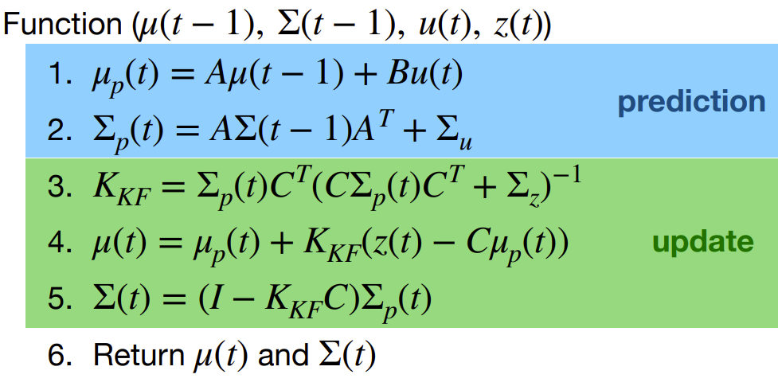
The first step is to calculate the state transition matrix, which is shown below:
Which resulted in:
Then we can calcualte the discrete-time distance readings, which is shown below:
Which resulted in:
Finally, I calculated vector state x to be the frist TOF data as well as set uss=1 N (which is the sets command to 100% input)
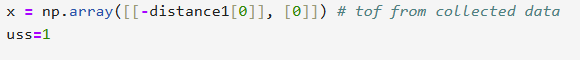
Next, I roughly estimated the noise covariance matrice (simga_u) and the noise covariance matrice (sigma_z). As shown below:
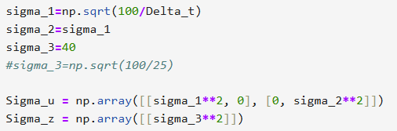
I kept sigma 1 and 2 constant, but I varied sigma 3 which is the noise covariance matrice for the TOF sensor.
Which resulted in the following results:
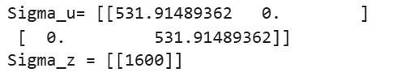
Now we can calculate the Kalman Filter.
Referencing Stephan's, I was able to implement the kalaman function to perform each step of the filter
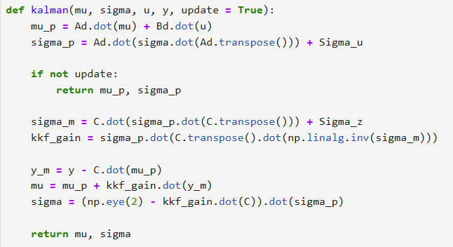
Steps through discrete time:
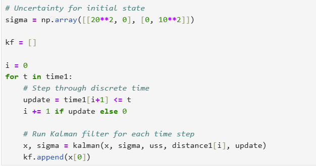
I then ran the Kalman Filter code and plotted the results for sigma 3 = 5, 10, 15, 20, and 40.
Results:
sigma 3 = 5;
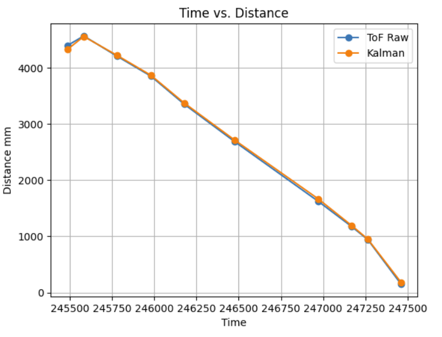
sigma 3 = 10;
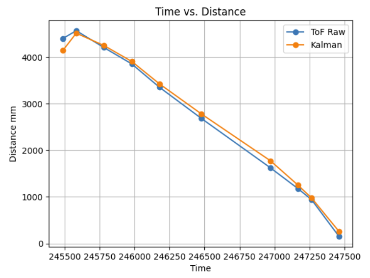
sigma 3 = 15;

sigma 3 = 20;
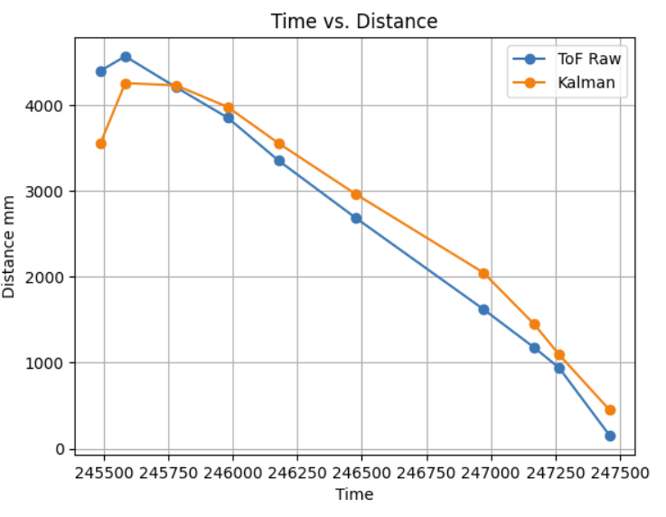
sigma 3 = 40;
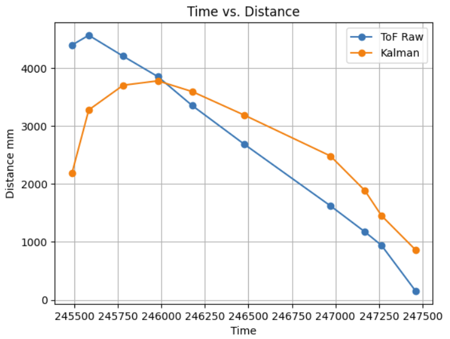
Observations: What I noticed at sigma 3 = 5, the Kalman Filter was able to predict the very well. However, as sigma 3 increased, the Kalman Filter was not able to predict the distance as well.
Task 2: Implementing on Robot
I did not have the time to be able to implement the Kalman Filter on the robot.
However, I was under the assumption that we did not have to implement the Kalman Filter on the robot, but rather just calculate the values for the filter on python.
As it was mentioned in the lab hand out that "if you have time, you can implement the Kalman Filter on the robot".
As shown here:
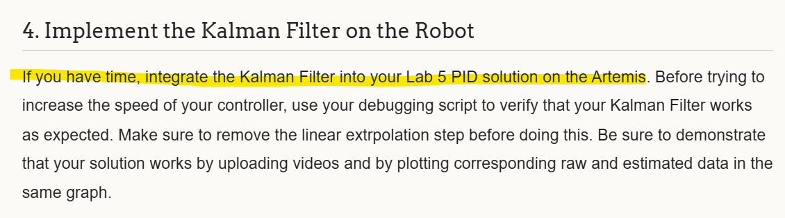
However, I will include snippts of my code that I would have used to implement the Kalman Filter on the robot.
I truly tried, but I was not able to get the code to work.
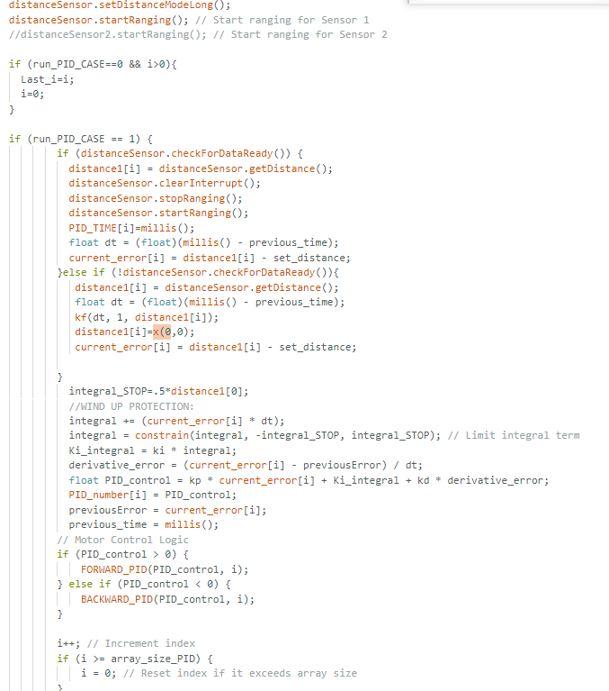
I replaced my linear interpolation code with the Kalman Filter code.
But I keep having compilation errors.
I tried to fix the errors, but I was not able to.
I also tried to implement the Kalman Filter in the main loop, but I was not able to get it to work.